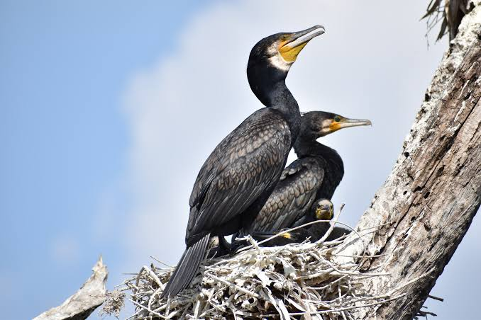

Cormorant
Birds
Phalacrocoracidae is a family of approximately 40 species of aquatic birds commonly known as cormorants and shags. Several different classifications of the family have been proposed recently and the number of genera is disputed.
Scientific name: Phalacrocoracidae
Family: Phalacrocoracidae; Reichenbach, 1850
Class: Aves
Length:Flightless cormorant: 89 – 100 cm, Imperial shag: 70 – 79 cm, Kerguelen shag: 65 cm
Mass: Flightless cormorant: 2.5 – 5 kg, Imperial shag: 1.8 – 3.5 kg
Seven species each are found in North and South America, five in Eurasia, and three each in Africa and Australia. The species range from conspicuous and gregarious to solitary and skulking.
Cormorant, also called shag, any member of about 26 to 30 species of water birds constituting the family Phalacrocoracidae (order Pelecaniformes or Suliformes).
In the Orient and elsewhere these glossy black underwater swimmers have been tamed for fishing. Cormorants dive for and feed mainly on fish of little value to man. Guano produced by cormorants is valued as a fertilizer.
Cormorants inhabit seacoasts, lakes, and some rivers. The nest may be made of seaweed and guano on a cliff or of sticks in a bush or tree. The two to four chalky eggs, pale blue when fresh, hatch in three to five weeks, and the young mature in the third year.
Cormorants have a long hook-tipped bill, patches of bare skin on the face, and a small gular sac (throat pouch). The largest and most widespread species is the common, or great, cormorant, Phalacrocorax carbo.
white-cheeked, and up to 100 cm (40 inches) long, it breeds from eastern Canada to Iceland, across Eurasia to Australia and New Zealand, and in parts of Africa.
It and the slightly smaller Japanese cormorant, P. capillatus, are the species trained for fishing. The most important guano producers are the Peruvian cormorant, or guanay, P. bougainvillii, and the Cape cormorant, P. capensis, of coastal southern Africa.
Though cormorants are traditionally grouped in the order Pelecaniformes, some taxonomists have suggested that on the basis of genetic data, they should be grouped with boobies and gannets (family Sulidae), darters (family Anhingidae), and frigate birds (family Fregatidae) in the order Suliformes.
Biology of Cormorant
Behaviour
All are fish-eaters, dining on small eels, fish, and even water snakes. They dive from the surface, though many species make a characteristic half-jump as they dive, presumably to give themselves a more streamlined entry into the water.
Under water they propel themselves with their feet, though some also propel themselves with their wings (see the picture, commentary, and existing reference video).
Some cormorant species have been found, using depth gauges, to dive to depths of as much as 45 metres (150 ft).
Wing-drying behaviour
After fishing, cormorants go ashore, and are frequently seen holding their wings out in the sun. All cormorants have preen gland secretions that are used ostensibly to keep the feathers waterproof. Some sources state that cormorants have waterproof feathers while others say that they have water-permeable feathers.
Still others suggest that the outer plumage absorbs water but does not permit it to penetrate the layer of air next to the skin. The wing drying action is seen even in the flightless cormorant but commonly in the Antarctic shags and red-legged cormorants.
Alternate functions suggested for the spread-wing posture include that it aids thermoregulation or digestion, balances the bird,
or indicates presence of fish. A detailed study of the great cormorant concludes that it is without doubt to dry the plumage.
Taxonomy
The cormorants are a group traditionally placed within the Pelecaniformes or, in the Sibley–Ahlquist taxonomy, the expanded Ciconiiformes.
This latter group is certainly not a natural one, and even after the tropicbirds have been recognised as quite distinct, the remaining Pelecaniformes seem not to be entirely monophyletic.
Their relationships and delimitation – apart from being part of a "higher waterfowl" clade which is similar but not identical to Sibley and Ahlquist's "pan-Ciconiiformes" – remain mostly unresolved. Notwithstanding, all evidence agrees that the cormorants
and shags are closer to the darters and Sulidae (gannets and boobies), and perhaps the pelicans or even penguins, than to all other living birds.
In recent years, three preferred treatments of the cormorant family have emerged: either to leave all living cormorants in a single genus, Phalacrocorax, or to split off a few species such as the imperial shag complex (in Leucocarbo) and perhaps the
flightless cormorant. Alternatively, the genus may be disassembled altogether and in the most extreme case be reduced to the great, white-breasted and Japanese cormorants.